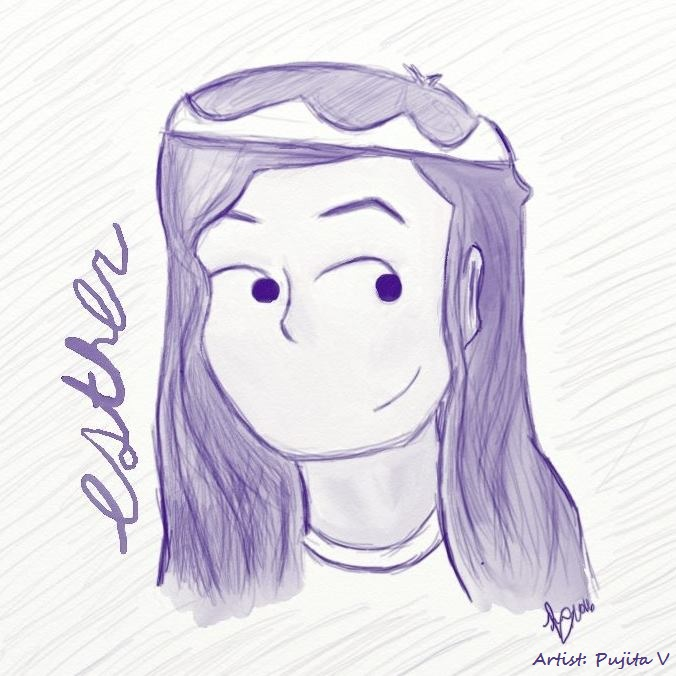

ESTHER JIN
Photo Credit: Unsplash

About Me
Hello! My name is Esther and I'm a Computing and Finacial Management student at the University of Waterloo. I love reading, creative writing, making new friends and I'm quite passionate about the environment! I hope you like my website!!!
Email: esther.jin@uwaterloo.ca
Github: /EstherJin
LinkedIn: /in/esther-jin